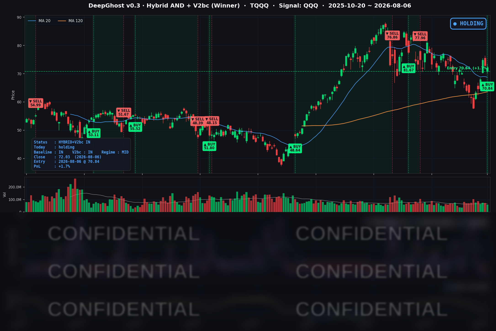

👻 매일 시그널과 히스토리를 홈페이지에서 한눈에 → www.ghostai.co.kr
우리는 어제 시가 $70.85에 매수하였습니다. 하루전에 분할 매수 하라고 말씀드렸는데, 분할 매수했으면 조금 높은 가격에 진입하셨을 겁니다. 1~2% 차이는 나겠지만 큰 차이는 아니고 상황에 따라 유리할수도 불리 할 수도 있습니다. 그럼에도 불구하고 리스크 헷지 측면에서는 분할매수는 항상 맞습니다. 오늘 호르무즈 해협 상황과 고용 지표가 잘 나와서 금리 상승으로 시장이 좋진 않았지만, 며칠전 말씀드린바와 같이 투자심리가 살아나 잘 버텼습니다. 투자 심리가 안좋을때 금리 리스크 뉴스는 큰 폭의 하락을 불러옵니다. 이정도로 막은걸 보니 투자 심리는 괜찮은 것으로 보입니다.
📊 오늘의 매매 신호
| 항목 | 내용 |
|---|---|
| 오늘 할 일 | ✅ 아무것도 안 해도 됩니다 |
| 포지션 상태 | 📈 TQQQ 보유 중 (IN POSITION) |
| 매수 진입일 | 2026-08-06 (진입 당일) |
| 진입가 → 현재가 | $70.84 → $72.03 |
| 현재 포지션 수익 | +1.68% |
어제(08-05) 발생한 매수 신호가 오늘(08-06) 미국 장 시가에 예정대로 체결되었습니다.
TQQQ 시그널 — IN POSITION
현재 상태: 매수 포지션 유지 중 | 이번 포지션 평가수익 +1.68%

마침 오늘 장이 갭업 없이 낮게 열려 진입가($70.84)가 종가($72.03)보다 낮게 잡혔습니다. 그 결과 진입 당일임에도 전략의 평가수익이 +1.68%로 출발했습니다.
오늘 미국 시장 — 시황 요약
지수 마감
| 지수 | 종가 | 등락률 |
|---|---|---|
| S&P 500 | 7,709.96 | -0.18% |
| 나스닥 종합 | 26,348.35 | -0.06% |
| 다우존스 | 53,885.10 | -0.85% |
| 러셀 2000 | 3,001.55 | -0.58% |
| TQQQ (3x 나스닥) | 72.03 | -1.11% |
전반적으로 위험 회피라기보다는 고점 부근에서 숨을 고른 하루였습니다. 대형 기술주 중심의 나스닥(-0.06%)은 거의 보합이었던 반면, 경기민감·가치주 비중이 큰 다우(-0.85%)와 소형주(러셀 -0.58%)가 상대적으로 크게 밀렸습니다.
국채 금리 동향
| 만기 | 수익률 | 전일 대비 |
|---|---|---|
| 3개월 | 3.732% | +0.7bp |
| 5년 | 4.389% | +6.5bp |
| 10년 | 4.670% | +5.3bp |
| 30년 | 5.213% | +3.9bp |
단기물(3개월)은 사실상 고정된 반면, 중장기물이 더 크게 오르며 금리 곡선 전체가 위로 밀렸습니다. 견조한 노동시장 지표가 "인하를 서두를 이유가 없다"는 인식을 강화하면서 중장기 금리를 끌어올린 것으로 풀이됩니다. 10년물-3개월물 스프레드는 +93.8bp로 곡선은 여전히 정상적인 우상향 형태이며, 역전 상태는 아닙니다.
연준 발언 & 금리 패스
지난 7월 29일 FOMC에서 정책금리를 3.50-3.75%로 동결한 뒤, 연준은 신중한 관망 기조를 유지하고 있습니다. 8월 6일 당일 시장을 움직인 새로운 연준 이벤트는 없었습니다. 시장의 해석은 매파~중립으로, "9월 인하 가능성은 열려 있으나 확정은 아니다"라는 관망 프레임이 이어지고 있습니다. 오늘의 중장기 금리 상승은 인하 기대의 후퇴라기보다 "고용이 강해 급할 것 없다"는 재평가에 가깝습니다.
오늘의 핵심 이슈
- 금리 상승이 지수 상단을 눌렀다: 중장기 금리가 오르며 다우와 소형주가 상대적으로 부진했고, 기술주는 방어했습니다.
- 강한 노동시장 재확인: 주간 신규 실업수당 청구가 199,000건으로 3주 연속 20만 건을 밑돌았습니다. 내일 발표될 7월 고용보고서를 앞두고 "강한 고용 → 인하 지연"이라는 서사가 금리를 자극했습니다.
- 유가 상승이 물가 경계를 자극: WTI가 +3.84%($78.11)로 3거래일째 올랐습니다. 다만 '호르무즈 해협 협상 임박' 기대가 상단을 제한하고 있습니다.
변동성 & 투자심리
- VIX (변동성 지수): 15.15 (-4.17%) — 지수가 소폭 내렸는데도 변동성은 오히려 하락했습니다. 오늘 조정이 공포성 매도가 아니라 질서 있는 되돌림이었음을 시사합니다.
- 공포탐욕지수 (CNN): 약 60 (탐욕 구간) — 최근 랠리 이후에도 심리는 낙관 우위를 유지하고 있습니다.
전반적으로 중립~낙관 분위기이지만, 내일 고용보고서 결과에 따라 방향이 크게 갈릴 수 있는 이벤트 대기 상태입니다.
매크로 & 원자재
- WTI 원유: $78.11 (+3.84%)
- 금(Gold): $4,298.90 (+1.25%)
유가와 금이 나란히 강세를 보였습니다. 물가 헤지 수요와 지정학 프리미엄이 함께 작용한 결과로, 원자재발 물가 상방 리스크가 중장기 금리 상승과 맞물리는 국면입니다.
주요 종목 동향
| 종목 | 종가 | 등락률 | 비고 |
|---|---|---|---|
| AAPL | 312.41 | +0.45% | 대형 하드웨어 완만한 강세 |
| MSFT | 499.86 | +2.54% | 당일 최강. OpenAI·Azure 성장 서사, $500 근접 |
| NVDA | 218.99 | -0.10% | 보합권 |
| GOOGL | 357.75 | -1.29% | 빅테크 중 최약, 광고·AI 경쟁 우려 |
| META | 589.90 | +0.19% | 보합권 |
| AMZN | 272.26 | -0.14% | 보합권 |
| AVGO | 420.57 | +0.55% | 통신·AI칩 견조 |
| QCOM | 160.39 | +1.82% | 반도체 내 강세, 반등 |
| MU | 881.47 | -1.31% | 메모리 약세 |
| INTC | 99.81 | -1.24% | $100 하회, 파운드리 부담 |
| TSLA | 319.53 | -0.63% | 소폭 약세 |
오늘은 시장이 위험을 일괄적으로 피한 게 아니라 종목별로 선별한 하루였습니다. 소프트웨어·AI(MSFT)가 홀로 독주한 가운데, 반도체 안에서도 설계·통신칩(QCOM·AVGO)은 강세, 메모리(MU)·파운드리(INTC)는 약세로 뚜렷하게 갈렸습니다.
내일 주목할 이벤트 — 7월 고용보고서(NFP)
내일(8월 7일) 아침 8시 30분(미 동부시각)에 발표되는 7월 고용보고서가 이번 주 최대 이벤트입니다. 비농업 신규고용·실업률·시간당 임금 결과가 9월 인하 기대와 금리 방향을 좌우합니다. 고용이 예상보다 강하면 인하 지연·금리 추가 상승으로 성장주에 역풍이, 반대로 약하게 나오면 인하 기대가 되살아나며 순풍이 될 수 있습니다. 전략이 어제 진입한 포지션이 이 이벤트를 정면으로 맞는 구조라, 결과에 따라 흐름이 크게 갈릴 수 있는 관전 포인트입니다. (전망 단정이 아니라 지켜볼 지점을 안내하는 것입니다.)
Ghost.AI — Quantitative AI Investment
Model: DeepGhost v0.3 | Transformer-Based Deep Learning
Coverage: 13 tickers | Updated every trading day after US market close
⚠️ 본 자료는 정보 제공 목적으로만 작성되었으며 투자 권유가 아닙니다. 모든 투자의 책임은 투자자 본인에게 있습니다. 과거 성과가 미래 수익을 보장하지 않습니다.
[유의사항]
- 본 서비스는 불특정 다수를 대상으로 발행되는 단방향 정보 제공 서비스이며, 투자자 개인의 재산 상황·투자 목적·위험 선호도를 반영한 개별 투자 조언이 아닙니다.
- 고스트에이아이 주식회사는 고객과 쌍방향 의사소통(개별 상담, 맞춤형 자문 등)을 제공하지 않습니다.
- 본 콘텐츠는 투자 권유 또는 매매 주문의 청약·청약의 권유에 해당하지 않으며, 최종 투자 판단 및 그에 따른 손익의 책임은 전적으로 투자자 본인에게 있습니다.
고스트에이아이 주식회사